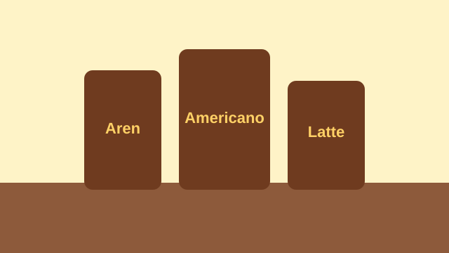

Galeri Kopi Nusa
Jelajahi momen di balik layar Kopi Nusa mulai dari racikan kopi terbaik, kebersamaan tim, hingga visual dan alunan suasana kedai kami.

Media Usaha


Suasana Kedai Kopi Nusa
Bawa suasana santai kedai Kopi Nusa langsung ke dalam ruanganmu.